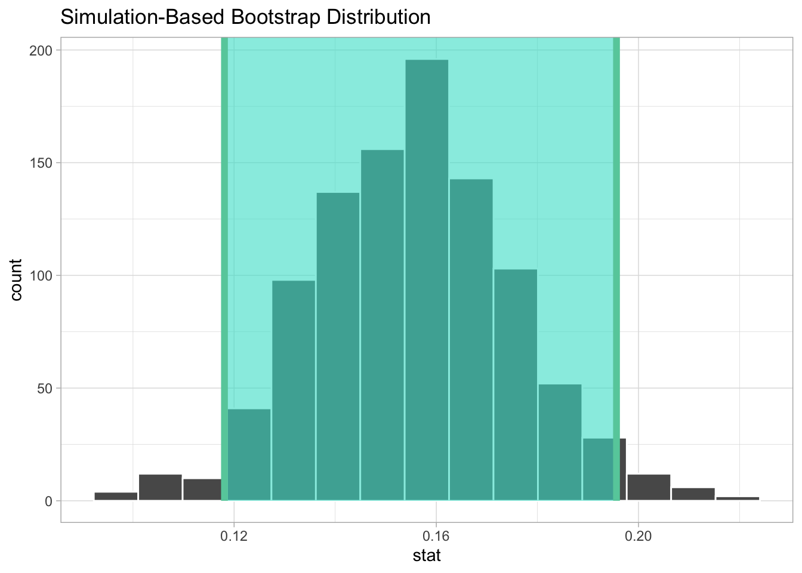
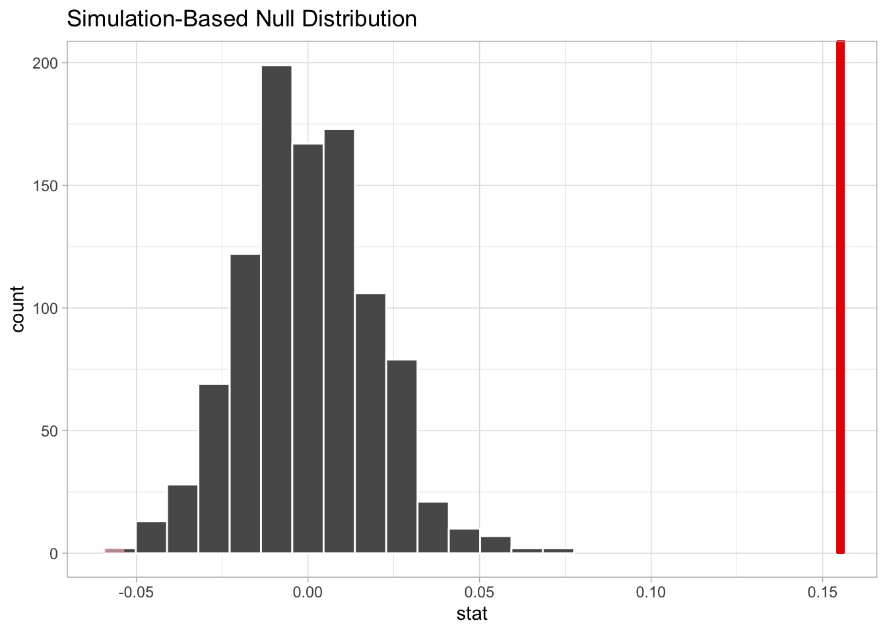

── Attaching core tidyverse packages ──────────────────────── tidyverse 2.0.0 ──
✔ dplyr 1.1.3 ✔ readr 2.1.4
✔ forcats 1.0.0 ✔ stringr 1.5.0
✔ ggplot2 3.4.3 ✔ tibble 3.2.1
✔ lubridate 1.9.2 ✔ tidyr 1.3.0
✔ purrr 1.0.2
── Conflicts ────────────────────────────────────────── tidyverse_conflicts() ──
✖ dplyr::filter() masks stats::filter()
✖ dplyr::lag() masks stats::lag()
ℹ Use the conflicted package (<http://conflicted.r-lib.org/>) to force all conflicts to become errors
Package loaded. To attach the GSS data, type data(gss_all) at the console.
For the codebook, type data(gss_doc).
For the panel data and documentation, type e.g. data(gss_panel08_long) and data(gss_panel_doc).Exercise_06
6.1.2
You are designing a survey to estimate the proportion of individuals who will vote Democrat. Assuming that respondents are a simple random sample of the voting population, how many people do you need to poll so that the standard error is less than 5 percentage points?
We know that the true proportion of people voting Democrat is 0.53
Sample size formula: \(n=[((Z *sqrt(p*(1-p)))/E]^2\)
Z <- 1.96 # Z-score for 95% confidence level
p <- 0.53 # Estimated proportion of people voting Democrat
E <- 0.05 # Margin of error
sample_size <- ((Z * sqrt(p * (1 - p))) / E)^2
round(sample_size)[1] 383We need to sample at least 383 people so that the standard error is less that 5%
6.1.5
What is the probability of observing the “true” value ( p= 0.53 ) under the null?
# Simulating the null distribution (50-50 D/R)
draws <- rbinom(1e4, size = 1000, prob = 0.50)
null <- draws / 1000
null<-data.frame(null)
# How often does null distribution get p=0.53?
null_is_point53<-null |>
filter(null==0.53)
num_obs_of_point53_null<-nrow(null_is_point53)
# probability of observing p=0.53 under the null:
num_obs_of_point53_null/1000[1] 0.04What is the probability of observing prop_hat under the null? Is this statistically significant if the confidence level (alpha) is set to 0.05?
# getting p_hat
one_dataset <- rbinom(1000, size = 1, prob = 0.53)
prop_hat <- mean(one_dataset)
prop_hat[1] 0.512# gett null
draws <- rbinom(1e4, size = 1000, prob = 0.50)
null <- draws / 1000
# Calculate the proportion of null samples that are equal to prop_hat
probability <- sum(null == prop_hat) / length(null)
probability[1] 0.0168# Check for significance if alpha = 0.05
alpha <- 0.05
is_significant <-probability<=alpha
# is the result significant?
is_significant[1] TRUE6.1.7
Verify that this standard error formula corresponds to sd(theta_distribution).
p1 <- 0.5
n1 <- 120
p2 <- 0.6
n2 <- 90
S <- 1e5
draws1 <- rbinom(S, size = n1, prob = p1)
proportions1 <- draws1 / n1
draws2 <- rbinom(S, size = n2, prob = p2)
proportions2 <- draws2 / n2
theta_distribution <- proportions1 - proportions2
standard_error_using_sd_function<-sd(theta_distribution)
standard_error_using_sd_function[1] 0.06873658standard_error_using_formula<-sqrt((p1 * (1 - p1) / n1) + (p2 * (1 - p2) / n2))
standard_error_using_formula[1] 0.06892024# testing if equal
standard_error_using_sd_function==standard_error_using_formula[1] FALSE# the values are super close but not exactly equal!6.1.8
A randomized experiment is performed within a survey. 1000 people are contacted. Half the people contacted are promised a $5 incentive to participate, and half are not promised an incentive. The result is a 50% response rate among the treated group and 40% response rate among the control group. Give an estimate and standard error of the difference in proportions.
n_treated<-500
n_not_treated<-500
response_treated<-0.5
response_not_treated<-0.4
#Estimate of difference in proportions:
p_diff <- response_treated - response_not_treated
p_diff [1] 0.1# standard error of difference in proportions
standard_error<-sqrt(
(response_treated * (1 - response_treated) / n_treated) +
(response_not_treated * (1 - response_not_treated) / n_not_treated)
)
standard_error[1] 0.03130495Fetching: https://gss.norc.org/documents/stata/2018_stata.zipRows: 2,235
Columns: 3
$ sex <fct> male, male, female, male, female, female, male, female, male,…
$ attend <dbl> 5, 2, 6, 8, 4, 7, 7, 0, 4, 5, 0, 3, 0, 7, 1, 0, 4, 5, 2, 7, 1…
$ polviews <dbl> 6, 5, 4, 7, 3, 4, 5, 4, 6, 4, 4, 3, 2, 5, 2, 6, 2, 4, 6, 6, 4…6.2.1
Go to the GSS website and describe the values of attend and polviews—e.g., what does a value of “4” mean in polviews.
“Attend” measures how often the respondent attends religious services. The possible responses are as follows:
| Response | Meaning |
|---|---|
| -100 | Inapplicable |
| -99 | No answer |
| -98 | Do not know/Cannot choose |
| -97 | Skipped on web |
| 0 | Never |
| 1 | Less than once a year |
| 2 | About once or twice a year |
| 3 | Several times a year |
| 4 | About once a month |
| 5 | 2-3 times a month |
| 6 | Nearly every week |
| 7 | Every week |
| 8 | Several times a week |
“Polviews” measures how much someone classifies themselves as liberal or conservative. The possible responses are as follows:
| Response | Meaning |
|---|---|
| -100 | Inapplicable |
| -99 | No answer |
| -98 | Do not know/Cannot choose |
| -97 | Skipped on web |
| 1 | Extremely liberal |
| 2 | Liberal |
| 3 | Slightly liberal |
| 4 | Moderate, middle of the road |
| 5 | Slightly conservative |
| 6 | Conservative |
| 7 | Extremely conservative |
6.2.2
Repeat what we did in class with Steve, but compare the weekly variable to a new variable call conservative.
d <- d |>
mutate(conservative = if_else(polviews >= 5, 1L, 0L),
weekly = if_else(attend >= 7, 1L, 0L)) |>
select(conservative, weekly) |>
drop_na() |>
mutate(polviews = if_else(conservative == 1, "Conservative", "Not_Conservative"))
# cross-tab
d |>
tabyl(conservative, weekly) |>
adorn_percentages("row") |>
adorn_pct_formatting(digits = 2) |>
adorn_ns() conservative 0 1
0 82.87% (1,243) 17.13% (257)
1 67.35% (495) 32.65% (240)# graph
d |>
group_by(polviews) |>
summarize(percent = mean(weekly)*100) |>
ggplot(aes(x = polviews,
y = percent,
fill = polviews)) +
ylab("Percent attending services at least weekly")+
xlab(NULL)+
geom_col() +
coord_flip()
6.2.2
Is the difference in proportions between conservative and weekly statistically significant?
boot_dist <-
d |>
specify(weekly ~ polviews) |>
generate(reps = 1000,
type = "bootstrap") |>
calculate(stat = "diff in means",
order = c("Conservative", "Not_Conservative"))
ci <- boot_dist |>
get_confidence_interval(level = .95)
ci# A tibble: 1 × 2
lower_ci upper_ci
<dbl> <dbl>
1 0.118 0.196boot_dist |>
visualize() +
shade_ci(ci)
# hypothesis testing
obs_diff <- mean(d$weekly[d$polviews=="Conservative"]) -
mean(d$weekly[d$polviews=="Not_Conservative"])
# create null distribution
null_dist <- d |>
specify(weekly ~ polviews) |>
hypothesize(null = "independence") |>
generate(reps = 1000,
type = "permute") |>
calculate(stat = "diff in means",
order = c("Conservative", "Not_Conservative"))
null_dist |>
get_p_value(obs_diff,
direction = "both")Warning: Please be cautious in reporting a p-value of 0. This result is an
approximation based on the number of `reps` chosen in the `generate()` step.
See `?get_p_value()` for more information.# A tibble: 1 × 1
p_value
<dbl>
1 0null_dist |>
visualize() +
shade_p_value(obs_diff,
direction = "both")
# yes, difference in proportions is stastically significant6.2.4
On the x-axis of each plot, the “attend” response values are plotted in ascending order. The left-most column of each plot represents the polviews of those who never attend religious services, while the right-most column represents the polviews of those who attend religious services several times each week.
On the y-axis of each plot, the “polviews” response values are plotted in ascending order. The bottom-most row of each plot represents the religious service attendance patterns of those who identify as as extremely liberal, while the upper-most row represents the religious service attendance patterns of those who identify as extremely conservative.
Generally, we see that attendance patterns seem more different when looking at the political extremes (e.g., 0 or 7) than when looking at more moderate political views.
Here are the same values represented using the tabyl() function:
gss18 |>
select(sex, attend, polviews) |>
haven::zap_missing() |>
mutate(sex = as_factor(sex)) |>
haven::zap_labels() |>
drop_na() |>
tabyl(polviews, attend) |>
adorn_percentages("row") |>
adorn_pct_formatting(digits = 2) |>
adorn_ns() polviews 0 1 2 3 4
1 56.56% (69) 4.10% (5) 7.38% (9) 5.74% (7) 2.46% (3)
2 46.21% (128) 6.14% (17) 10.83% (30) 9.75% (27) 3.97% (11)
3 30.20% (77) 7.06% (18) 14.51% (37) 10.98% (28) 8.24% (21)
4 29.31% (248) 6.15% (52) 15.37% (130) 12.29% (104) 6.26% (53)
5 23.32% (66) 7.07% (20) 14.49% (41) 8.13% (23) 8.13% (23)
6 20.96% (74) 3.97% (14) 10.20% (36) 9.92% (35) 6.52% (23)
7 16.16% (16) 0.00% (0) 8.08% (8) 7.07% (7) 9.09% (9)
5 6 7 8
7.38% (9) 2.46% (3) 9.84% (12) 4.10% (5)
6.50% (18) 3.61% (10) 8.66% (24) 4.33% (12)
7.45% (19) 4.31% (11) 13.33% (34) 3.92% (10)
8.75% (74) 2.96% (25) 14.78% (125) 4.14% (35)
10.95% (31) 4.59% (13) 18.02% (51) 5.30% (15)
6.52% (23) 5.67% (20) 29.46% (104) 6.80% (24)
8.08% (8) 5.05% (5) 25.25% (25) 21.21% (21)